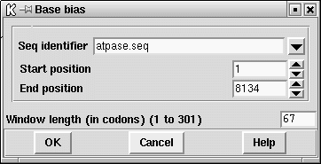

This method is used to find regions of a sequence that code for a protein. It is based on the method of Fickett Fickett,J. (1982) Nucl. Acid Res.10, and unlike the other methods currently in the package does not attempt to say either which strand or frame is likely to be coding, only which regions of the sequence.
The method looks for sections of the sequence in which the frequencies at which each of the four bases occupy the three positions in codons is nonrandom. The level of nonrandomness is plotted on a scale that shows the probability that the sequence is coding. At each position along a sequence the calculation gives the same value for all six possible reading frames, so only one value is plotted. Seventy six percent of coding regions score above 0.78 and 76% of noncoding regions below 0.78. No known window in a coding region has a value below 0.4, but 14% of windows in noncoding sequences score below it. No known window in a noncoding region reaches a score of 1.34, but this score is reached by 16% of known coding regions. These statements are now very much out of date.
The method was first described in Staden R. (1984) Nucl. Acid Res. 12, 551-567. It looks through the sequence in one fixed phase and counts the number of times each base appears in each of the three codon positions: for each window position it counts A1,A2,A3 and C1,C2,C3 and G1,G2,G3 and T1,T2,T3 and calculates AMEAN=(A1+A2+A3)/3, and similarly CMEAN, GMEAN and TMEAN; it then calculates ADIF=abs(A1- AMEAN)+abs(A2-AMEAN)+abs(A3-AMEAN) and similarly CDIF, GDIF and TDIF to measure the differences between an even base usage for all positions in the codons and the observed usage. The routine then calculates and plots the sum ADIF+CDIF+GDIF+TDIF.
In the figure shown below it will be seen that much of the sequence being analysed appears to be coding, and this is indeed the case. Many of the troughs between peaks correspond to the ends of genes in this E. coli sequence (which was not a good choice to illustrate the method!). The horizontal line is at 76%. 76% of coding regions achieve values above this line and 76% of noncoding regions achieve scores below the line.
As can be seen in the dialogue below
the user can set the window length in codons (although around 67 codons is
generally suitable) and can restrict the search to a sub region of the
sequence. Note that the window length must be odd.

![[picture]](spin_base_bias_p,6in.png.html)
(Click for full size image)
Last generated on 25 April 2016.